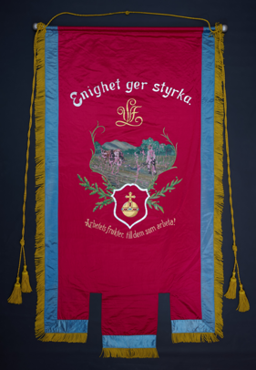

Projektets bakgrund
Projktarbetet genomfördes i samarbete med Folkrörelsearkivet i Uppsala. Syftet var att tillhandahålla bilder inför ett föredrag som skulle hållas av kulturforskaren och fanxperten Margareta Ståhl. Den historiska bakgrunden på hemsidan är ett kompilat av en intervju som genomfördes med Margareta Ståhl 30 mars 2026 samt av föredraget som hölls på Folkrörelsearkivet 14 april 2026.
Om oss
Vi är tre studenter vid Borås Högskola
som har gjort detta projektarbete inom kursen
Digitalisering för bevarande och tillgänglighet under vårtrminen 2026. Kursen ges som en del av
Masterprogrammet i Biblioteks- och Informationsvetenskap.
Materialet har fotograferats och publicerats av Jenny Aspelund, Maria Store
och Cecilia Pulkkanen. Projektets samtliga filer finns tillgängliga
via projektets Github.
Ladda ned de högupplösta bilderna